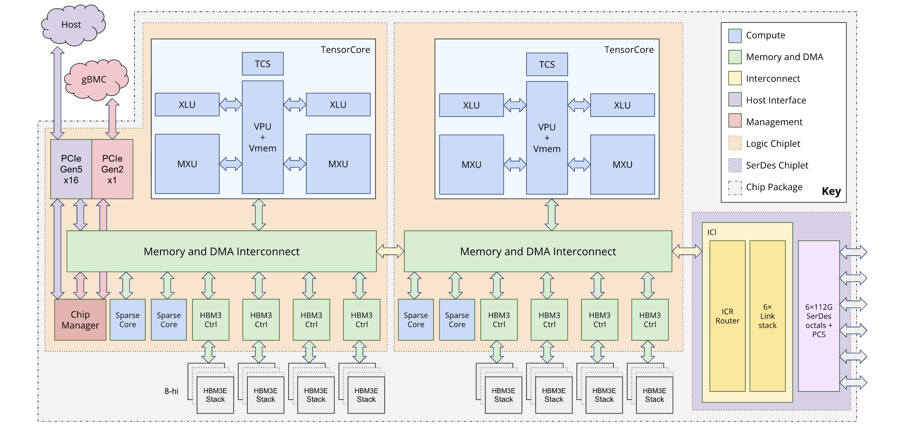
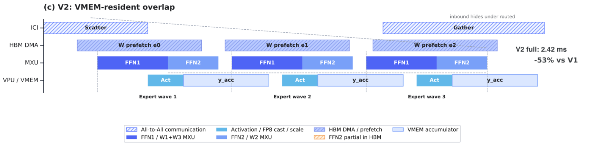
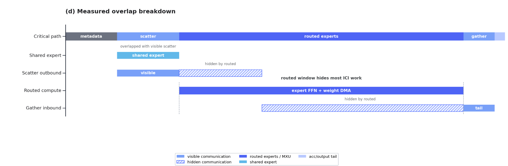

Sequence：
上下文长度 L 增长时，逐 token KV Cache 随 L 线性变大；Decode 每一步读取的历史也更长，HBM 容量、带宽与延迟一起承压。
Hybrid Attention
高效长程混合 + 选择性高容量注意力
KDAKDAKDAGated MLA
Chapter 01 / Prefill attention
Activation 的 4 行对应 4 个 token；Q/K/V 投影保留 token 轴，只改变横向的 feature 维度。
Chapter 02 / One-query attention
一行 Query 对全部可见 Key 产生一组 token 权重；同一组权重混合 Value 行，得到一行输出。
Chapter 03 / Decode attention
Decode 每次新增一个 token；K/V cache 因而增加一行，当前 Query 读取完整的 5-token 历史。
Chapter 04 / Multi-Head Attention
MHA 让不同 head 在不同子空间独立建模关系；4 条 Attention 路径并行执行，输出最后合并。
Chapter 05 / Grouped-Query Attention
GQA 保留 4 条 Query/Attention 路径，仅将 4 组 K/V 压缩为 2 组共享状态，降低 cache 规模。
Chapter 06 / Multi-head Latent Attention
MLA 将每个历史 token 的完整 multi-head K/V 替换为更紧凑的 latent 表示；非吸收实现可在使用时恢复 K/V。
token 轴有 5 行；每行常驻 8 个 head-specific blocks
token 行数仍是 5；每行保存的状态明显更窄
Storage effect：同样 5 个历史 token，cache 的行数不变；每行保存的状态从完整 multi-head K/V 变成更窄的 latent。
Chapter 07 / DeepSeek Sparse Attention
DSA 用轻量 Indexer 从历史中选出 Top-K token；核心 Attention 只读取这些位置的 latent KV。
为当前 token 在历史位置中寻找最相关的候选。
核心 Attention 只访问被选中的历史状态。
Chapter 08 / GLM-5.2 assembly
MLA、DSA、IndexShare 与 MoE 分别优化缓存、历史读取、跨层索引和 FFN 激活，共同支撑长上下文效率。
Chapter 09 / Scaling information flow
先不从 K3 的模块名倒推问题。沿 sequence length、network depth 与 model width 扩展标准 Transformer，会分别放大状态容量、残差稀释和单 token 激活成本。
上下文长度 L 增长时，逐 token KV Cache 随 L 线性变大；Decode 每一步读取的历史也更长，HBM 容量、带宽与延迟一起承压。
层数 D 增长时，PreNorm residual 以固定权重累加所有层输出；hidden state 持续增长，而单层贡献在累计流中逐渐被稀释。
模型宽度与容量增长时，若仍采用 Dense 激活，每个 token 的 FLOPs、activation、权重读取与跨卡通信都会同步增加。
Chapter 10 / Why Linear Attention
关键不只是计算量。当前 query 到来之后，Softmax 才能决定每个历史 key 的权重；因此历史 K/V 无法提前合并成一个与 query 无关的固定状态。
Softmax 把 qt 与每个 ki 绑定在一起：qt 没来之前，无法预先得到最终权重。
St 是 query-independent 的历史汇总：新的 query 只读取状态，不再逐项扫描历史 K/V。
Chapter 11 / Fixed-state memory
固定状态让 KDA 层不再维护随长度 L 增长的逐 token KV，但容量有限的状态会不断接收新信息：旧关联何时遗忘，冲突内容又如何覆盖？
每个历史 token 都留下独立 K/V；容量与 Decode 读取量持续增长。
无论上下文多长，KDA 层都更新同一个 dk×dv recurrent state。
只会继续累加。旧信息不会主动消失；相同 key 方向出现新 value 时，新旧关联会叠在一起。
通过输入相关 Gate 主动遗忘。Gate 根据当前输入，控制旧状态各部分的保留比例。
不仅整体衰减状态，还要先检查状态在 kt 方向上已经存了什么，再根据新旧差值定向覆盖。
Chapter 12 / Kimi Delta Attention
KDA 把固定状态当作可修改的关联记忆：先决定旧状态保留多少，再削弱当前 key 对应的旧映射，写入新的 key → value 关联，最后由 query 读取。

Chapter 13 / Hybrid Attention
论文中的一个 Hybrid block 由三组 KDA + Stable LatentMoE，再接一组 Gated MLA + Stable LatentMoE；整条主干重复这一排布，末尾再追加一层 Gated MLA。

Chapter 14 / Why Attention Residuals
PreNorm residual 仍然是重要的优化通道；问题在于它同时承担了信息聚合：embedding 与此前模块输出都以固定权重 1 进入同一个 hidden state。
Chapter 15 / AttnRes Q · K · V
普通 Attention 让当前 token 在历史 token 中选择；AttnRes 不跨 token，而是让当前模块在同一个 token 的 embedding 与此前层表示中选择。
Chapter 16 / Block AttnRes in Kimi K3
直接看 K3 架构：黑线负责 block 内的 residual 累加；红色 w / α 路径让当前模块读取 embedding、此前 block outputs 和当前 partial block。

Chapter 17 / LatentMoE
K3 的 896 个 routed experts 中，每个 token 选择 16 个。专家池很稀疏，但 Top‑16 仍会同时放大专家计算与跨卡 payload；K3 只把 routed path 从 d=7168 压到 ℓ=3584。

Chapter 18 / Architecture → systems
架构没有消灭成本，而是把 dense cost 重组为 cache、state、selection、routing 与通信；这些新成本需要在 Prefill 和 Decode 中分别分析。
系统重点：latent cache、Indexer/Top-K、Gather、routing 与 expert communication。
系统重点：recurrent state、depth reads、latent dispatch 与 expert balance。
Chapter 19 / TPU v7x hardware
后面的性能分析统一采用单芯片峰值：TensorCore 决定计算上限，HBM 决定权重和状态的供给速度，ICI 决定跨芯片 collective 与 MoE token routing 的搬运上限。

Chapter 20 / Performance model
Kernel 同时受计算与 HBM 搬运约束。理想重叠下，Tkernel≈max(Tcompute, THBM)；两者之比即 AI / Machine Balance。
Chapter 21 / Prefill vs Decode
权重主导的 FP8 GEMM：Compute≈2NW，HBM≈W×1B，因此 AI≈2N。TPU v7x 的 Machine Balance≈625 FLOP/B，对应 Nboundary≈313。
Chapter 22 / Model-aware Roofline
Dense GEMM 默认全部权重参与计算。GLM-5.2 常驻完整 expert pool，每个 token 仅激活 Top-8；Roofline 需区分 resident parameters 与 active parameters。
Chapter 23 / Long-context decode
TP↓ 可提高 Attention DP 与 global capacity，但 local batch 仍≤8。128K context 将历史 KV 纳入 HBM 流量：AI=Compute/(W+KV)，计算密度进一步下降。
W/device ≈ 45.3GB experts + 18.4GB / TP · theoretical ceiling; runtime reserve excluded.
Chapter 24 / Multi-token prediction
MTP 在一次 target forward 中验证 K 个候选：请求 batch 不变，并行 token 增加，权重复用率与 GEMM 计算强度同步提升。
Chapter 25 / MoE optimization
先算理论下界，再决定优化对象。这里使用 GLM-5.2 的 MoE 配置，在 16-chip TPU v7x、EP=32 下，从单 device 视角比较 Compute、HBM 权重读取与 ICI token routing。
| single-device estimate | BF16 baseline | FP8 scenario | cost model |
|---|---|---|---|
| Computerouted + shared expert | 0.536ms | 0.268ms | 618.5 GFLOP ÷ per-device MXU peak |
| HBM weights8 local routed experts · read once | 0.164ms | 0.082ms | 8 × 3 × H × I × dtype_bytes ÷ 3.69 TB/s |
| ICI routingscatter + gather · average 2 hops | 1.007ms | 0.503ms | (4096 × H × dtype_bytes ÷ 200 GB/s) × 2 × 2 |
Chapter 26 / Fused MoE pipeline
把 Scatter、Expert FFN、权重预取和 Gather 放进同一个调度域：当前 wave 在 MXU 上计算时，HBM DMA 预取下一组权重，ICI 与 VPU/VMEM 同时推进相邻 wave。

Chapter 27 / Measured overlap
Fused kernel 没有减少通信量，而是让通信、权重搬运和计算同时推进；图中仍然显露的 scatter lead 与 gather tail，指出下一步优化仍受 ICI 约束。
